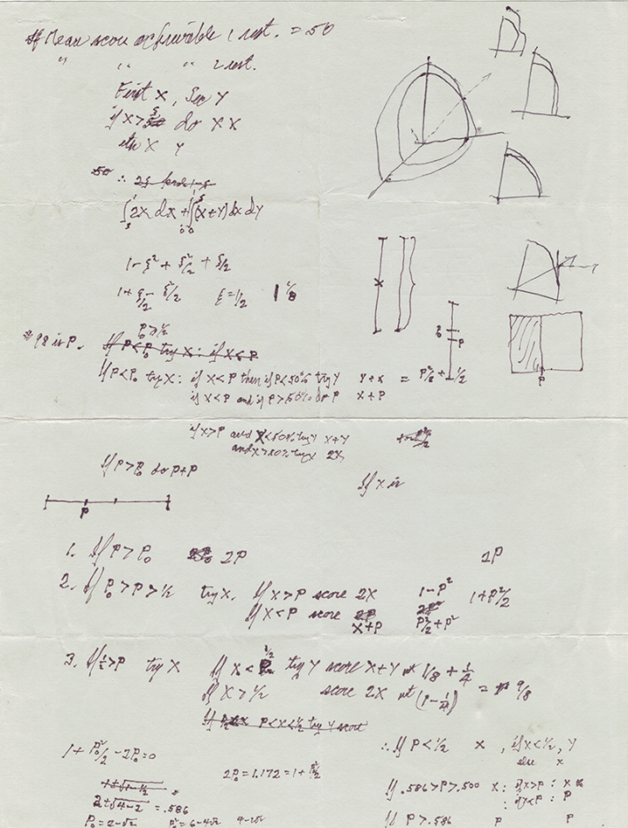
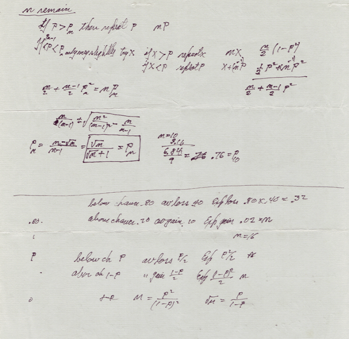

At a Thai restaurant in the late 1970s, physicist Richard Feynman watched his friend Ralph Leighton waffle over whether to order his usual ginger chicken or try something new. Feynman, known for his elegant solutions to complex problems, turned the moment of indecision into a math problem, scribbling out a solution on a piece of scratch paper—but never published on the subject.
Leighton, though, hung on to the handwritten notes for the next several decades. Then in the early aughts, physicist Michael Gottlieb, who maintains the Feynman Lectures on Physics website, tried to reconstruct what Feynman had written based on the recollections of Leighton, generating significant buzz in the physics community about what the notes actually meant—and whether the math was right.
When long-time collaborators Brian Christian and Tom Griffiths, who study human decision-making, got wind of the story, they decided to investigate for themselves. They got their hands on a copy of Feynman’s original notes and set out to decipher them. Griffith took them home, and after puzzling over them one night, he had a moment of insight: Feynman’s equations suggested that the more time you have to experiment at a particular restaurant, measured in meals, the more likely you are to experiment. Christian and Griffiths then set out to test whether Feynman’s solution holds up, both mathematically and in human behavior. Their study of 2,520 participants largely confirmed that the math works out in real life—with some important caveats. They recently published the findings in the Proceedings of the National Academy of Sciences.
I spoke with Christian, a researcher at the Center for Human Compatible AI at the University of California, Berkeley—and also a nonfiction author, poet, and programmer—about how Feynman’s restaurant problem works, what it says about human rationality, and how he uses it in his own life.
Read more: “What Impossible Meant to Richard Feynman”
It was fun to see the actual notes from this lunch in the paper. How did you get your hands on them, and why were they so difficult to explain for so long?
Yes, Ralph Leighton was so kind as to scan Feynman’s notes at as high a resolution as possible. This is actually the clearest image of them that’s existed in 50 years. We were really happy, and he was such a good sport about it. But they’re difficult to decipher for two reasons. One is just the handwriting, the kind of scribbly handwriting that looks like a doctor’s note. But another part of it is that Feynman is simultaneously defining a problem and solving it. That’s what made it such a fun piece of detective work. What you have to unravel to make sense of the notes is: What are these equations even trying to do? What’s the problem that he’s then going forward and solving?
What compelled you to tackle the Feynman restaurant mystery now?
We first encountered it 13 years ago. Tom Griffiths, my friend and longtime collaborator, and I were working on a history of these sorts of problems, which are known as “optimal stopping problems” and “explore-exploit” problems. We’d seen on the internet that there was this idea of the Feynman restaurant problem, and it wasn’t exactly known what it was. People had come up with their own reconstructions of what they thought it might have meant. For professional researchers, this is just pure catnip. We reached out to Mike Gottlieb, who ran the website for the Feynman lectures on physics and had made a webpage about the problem. We asked him, “Hey, you know, would it be possible to get a look at the handwriting?”
And then full credit to my collaborator Tom, who took the notes home overnight and came back and said, “Hey, I think I might know what this is about.” That was the insight that sent us down what has now been a many-years-long process. Once we figured out what the notes meant, we set about actually proving that this is the optimal solution to the problem, extending it to related problems, and ultimately posing the question as cognitive scientists: What do real people do when you put them in the Feynman restaurant problem? Do they do the optimal thing? Do they do something different?
Doing all of that work and getting it entered into the scientific record always takes longer than you think, but I didn’t reckon it would take until 2026.
So what is Feynman’s restaurant problem exactly?
It all starts with a fateful lunch that he was having with his friend Ralph. Ralph was deciding between getting his favorite dish, the ginger chicken, and trying something new, which is this very familiar human sort of dilemma. And Feynman being Feynman turned this into a math problem. If each dish is uniformly distributed between 0 and 100, with 100 being the best, and you’re going to be at this restaurant for n number of nights in a row, how do you decide on which nights you try something new and on which nights you reorder your favorite dish to maximize the total number of points that you’ll earn—a numerical quality score standing in for your dining pleasure.
Feynman was able to provide the mathematical solution to when a dish is good enough that you should just always eat that forever more. And it depends on how many more nights or how many more lunches you’re going to have in that particular restaurant. If you’re going to be eating at this restaurant for decades, you should set a higher bar for how good something needs to be before you’ll never try anything else.
If this is your last time eating there ever, you really should just get your favorite thing, because even in the slim chance that you did find something even better, you wouldn’t really get to cash in on it. You’d only be able to eat it once. Naturally, the threshold for how good something has to be that you’ll stop exploring starts really high, and it gets lower as you work your way through whatever period of time you’re going to be eating at this restaurant.

Courtesy of Ralph Leighton. Image credit: Richard P. Feynman (estate).
Out of pure curiosity, what did Leighton end up eating that day? Did he have the usual, or something new?
That’s such a good question, and I don’t remember. We’re going to have to ask Ralph. I know that his favorite dish was the ginger chicken, and he was deciding between that and I think the special of the day. But there’s the cliffhanger of what did he actually order?
How do you make the solution to the Feynman restaurant problem relevant to real world decision-making? Can you account for differences in appetite for novelty or even the fact that in modern life we have so many more choices in general than we used to? Do these elements change the equation?
Like any math problem, the Feynman restaurant problem abstracts away some of the messy reality of life. There are ways in which the solution has a certain, “imagine a spherical cow” kind of quality. For example, most of us probably would get bored eating the ginger chicken every single day for a month. The math doesn’t account for the pleasure of novelty itself. And sometimes a kitchen has an off night, or the restaurant gets under new management and it’s not the same. This is another one of the assumptions that Feynman’s restaurant math makes, which is that if the ginger chicken is an 86 out of 100, it’s always gonna be an 86 out 100. You never are in a different mood. The cook is never having an off day. Once you’ve sampled it, it’s precise.
But these assumptions are double-sided. You can argue very fairly that this is unrealistic about human psychology or just the nature of cooking. On the other hand, that’s part of what makes it such a clean distillation of the fundamental underlying tension, by abstracting those things away. At its core, it does capture this fundamental and very recognizable trade-off that we all make any number of times in a day or in a week.
You found a bias toward early exploration. Can you tell me more about how this generally plays out, and what it tells us?
The optimal math says that for any given number of nights remaining, there’s some quality threshold above which you should just keep going back to that restaurant and never explore anything else. What we find in our human participant data is that people are very reluctant to do that even when they get very lucky early on. So even if people are fortunate enough to encounter a really good dish on their first night, they’ll keep exploring at least for a little while.
There are a number of ways that we could try to make sense of that. You show people all of this data and you say, “This is the distribution of restaurant quality. Here’s however many samples, and we’re gonna familiarize you with it.” And then you put them into the experimental setting. At some level, people are understandably skeptical that we’re even telling them the truth, because psychological research has many decades of history of being a little bit sneaky with how the instructions may or may not map to what’s really being tested. From that perspective, it’s understandable that participants, particularly when they’re extremely lucky, explore a little more, because perhaps at some level they’re thinking, “Wait, you said this went from zero to 100, but what are the odds that I got a 99 my very first time? Maybe there’s something even better out there.” That’s a pretty understandable reaction.
It’s hard to study humans because they’re often, in effect, solving a more complex version of the problem than the one you’ve given them. We tell them explicitly this is the distribution, but they still want to figure it out for themselves. Human cognition is often solving something that’s more ambiguous and more nuanced than what you’re trying to test.

Courtesy of Ralph Leighton. Image credit: Richard P. Feynman (estate).
You also found that people rely on mental shortcuts to get close to the optimal solution. What kinds of mental shortcuts are these?
Two things, really. One is that the optimal math depends on the number of meals that you have left, but it ignores the number of meals you’ve eaten so far. Humans tend to think in terms of the percentage of total meals they’ve eaten rather than the absolute number remaining. The other thing is that the optimal math is nonlinear, but people are linear. The optimal math might say, “The quality threshold at which you’ll never explore again might be pretty flat at the beginning and then it drops off rapidly as you start to run out of meals.” Instead, humans do this linear thing where every day they lower their standards by basically the same amount. We even show in the paper that the slope of this line is identical across different distributions and across different numbers of nights. So there’s something very essential and very simple about the approach that people are using. But we also show that this linear threshold people are using, which has the same slope in every condition, is nevertheless kind of nudged up or nudged down in ways that are appropriate for that version of the task.
More to the point, it results in total dining pleasure points that are about 90 percent as good as the optimal solution, despite being radically simpler mathematically. This is an interesting story for a running narrative within cognitive science, which is what’s called resource rationality. If I zoom out a little bit, a lot of people are familiar with this idea from the late 20th century, from people like Daniel Kahneman, that humans are irrational. We do all these silly things, which are widely documented. But a more nuanced picture has started to emerge, starting in the late 1980s through the turn of the century, that’s a bit more redemptive and suggests that while people don’t do the perfect thing, they appear to be making near perfect use of limited resources: finite computing power, finite information, finite time. When you take those constraints into account, people seem to be a lot closer to the optimal version.
Our work with the Feynman restaurant problem contributes a small but meaningful dose of evidence in favor of that accounting. We show that people do this really simple thing. They don’t do the optimal thing, but nevertheless, the simple thing that they do is surprisingly well-suited to the task and does an impressively good job of getting them most of the value.
Read more: “What Would Richard Feynman Make of AI Today?”
You mentioned that this was something you started looking into because it was part of a larger book project. Can you tell me about that?
Tom and I have been collaborators now for more than 20 years, but back in 2013, we were working on what ultimately became a popular book for a general audience called Algorithms to Live By. The first two chapters are about optimal stopping problems and explore-exploit problems. The Feynman restaurant problem is arguably both. That was what first set us on this path. Little did we know how deep the rabbit hole was gonna go.
Is the implication that people can optimize their own decision-making by understanding some of these math problems?
Yes. That’s the thrust of the book, that the sorts of everyday problems that human beings face have a recognizable essential computational structure, and that once you develop the kind of vocabulary to make distinctions between these sorts of problems, you can recognize that. For example, “optimal stopping” includes things like where to park. You’re driving down the street, you see a space—do you take it and commit, or do you keep going, but perhaps lose that option? House hunting has the same structure. You go to an open house, and they expect offers the following Tuesday or whatever. You could argue that dating has the same structure. You’re in a relationship. Do you commit, or do you walk away to see what else is out there, but lose the option to change your mind perhaps?
There are these fundamental categories of problems that come up again and again in different guises in everyday life. The point is not to robotically apply these principles, but to develop the ability to recognize what sort of situation you’re in, and have a familiarity with how that category of problem tends to look. I find it weirdly helpful in my everyday life. My wife and I, when we’re going out to eat, we’ll literally say, “Should we explore, or should we exploit?” This has become the actual language that we use around the house.
Can you give me an example of a recent decision that it helped you with?
I remember when my wife and I were engaged, we were deciding whether I was gonna move in with her or she was gonna move in with me. She was in Oakland. I was in San Francisco, and the explore-exploit math, including Feynman’s own, says that your willingness to explore new things should be a function of how much time you have remaining. We thought, “Okay, if we’re moving to Oakland, then we should really just only do our favorite things in San Francisco, but make sure we try new stuff in Oakland.” Then, at one point, we changed our minds and decided that it would be better if she moved into my apartment than vice versa. And so we did a 180. We said, “We need to only do our favorite stuff in Oakland and only try new things in San Francisco.”
That mindset of thinking about where you are within the relevant interval that you’re trying to maximize—your behavior should naturally feel different when you’re at the beginning than when you’re at the end.
I think that’s a perfect stopping point.
Yes, an optimal stopping point, even! 
Enjoying Nautilus? Subscribe to our free newsletter.
Lead image: Courtesy of Ralph Leighton. Image credit: Richard P. Feynman (estate).